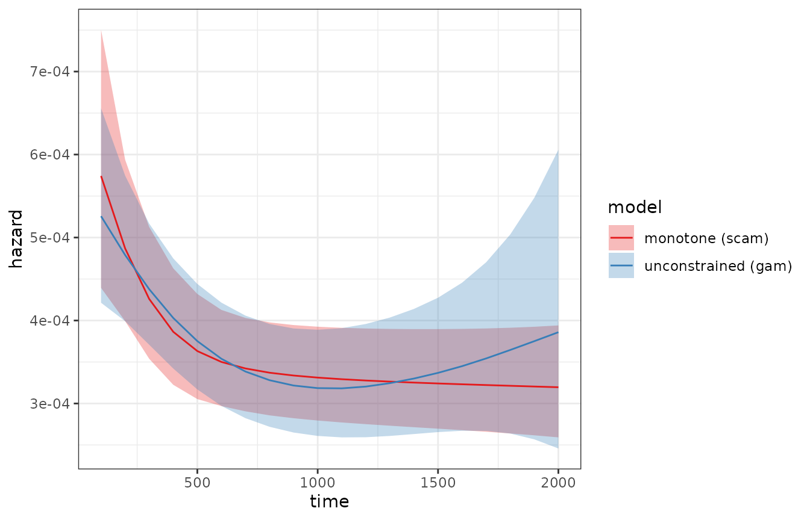
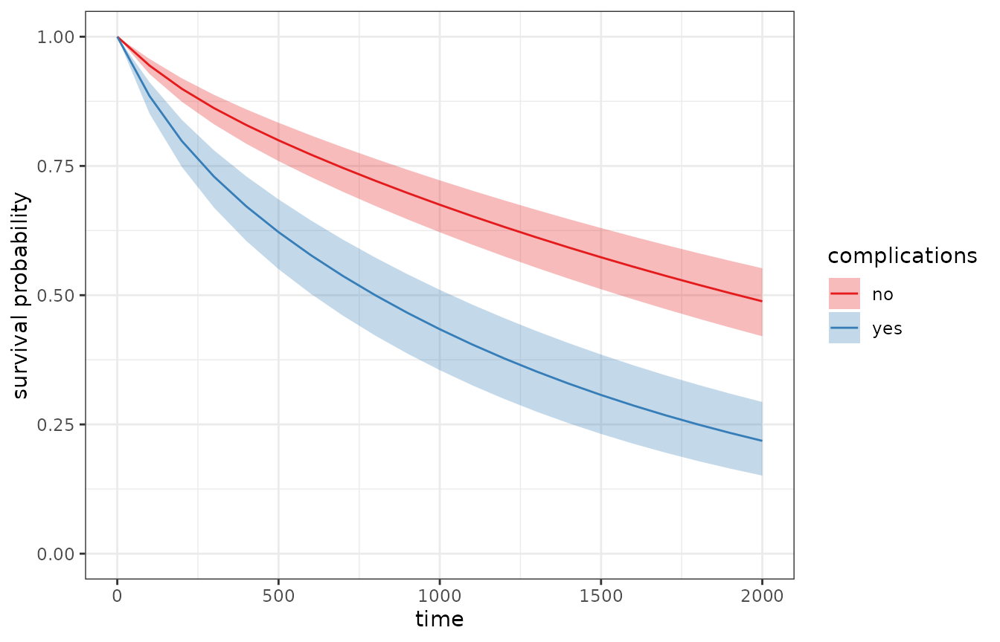
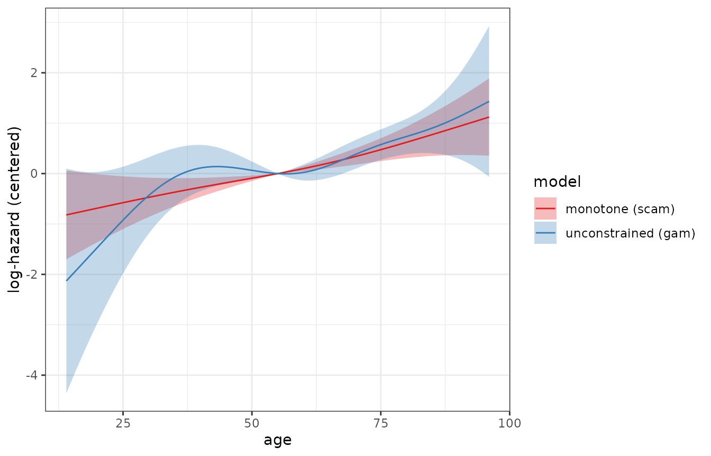
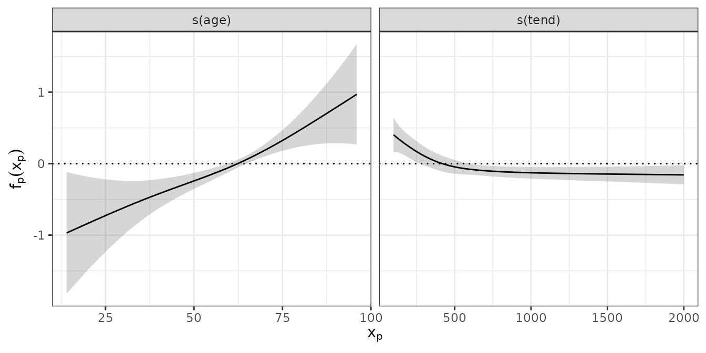

Shape-constrained effects (scam)
2026-06-17
Source:vignettes/shape-constraints.Rmd
shape-constraints.Rmd
library(dplyr)
library(tidyr)
library(ggplot2)
theme_set(theme_bw())
library(survival)
library(mgcv)
library(scam)
library(pammtools)
Set1 <- RColorBrewer::brewer.pal(9, "Set1")In many applications there is good reason to believe that an effect is monotone or otherwise shape-restricted, e.g.,
a baseline hazard that decreases monotonically after a successful operation or increases monotonically for wear-out processes,
a dose-response relationship that is known to be non-decreasing.
Unconstrained estimates of such effects can violate these assumptions
due to sampling variability, especially in regions with little data.
Shape-constrained additive models (SCAMs; Pya and Wood (2015)), implemented in the scam
package, extend mgcv’s penalized spline
approach such that individual smooth terms can be constrained to be
monotone (and/or convex/concave) by using specialized spline basis
functions (e.g., bs = "mpd" for monotone
decreasing or bs = "mpi" for monotone
increasing smooths).
Since PAMMs are estimated as Poisson GAMs, all of this functionality
carries over to hazard regression: simply replace the call to
mgcv::gam with a call to scam::scam (or use
pamm(..., engine = "scam")). The entire post-processing
workflow provided by pammtools
(make_newdata, add_hazard,
add_cumu_hazard, add_surv_prob,
add_term, add_cif, tidy_smooth,
gg_smooth, etc.) works for scam fits exactly
as it does for gam fits, including delta-method and
simulation-based confidence intervals.
Monotone baseline hazard
We illustrate the approach with the tumor data, where
interest could be in a baseline hazard of dying that is assumed to
decrease monotonically with time since the (successful)
operation. First we transform the data to the PED format and fit both,
an unconstrained PAM and a PAM with monotonically decreasing baseline
hazard (bs = "mpd"):
ped <- tumor %>% as_ped(
Surv(days, status) ~ age + complications,
cut = seq(0, 2000, by = 100))
# unconstrained fit
pam <- gam(ped_status ~ s(tend) + complications,
data = ped, family = poisson(), offset = offset)
# fit with monotonically decreasing baseline hazard
mpam <- scam(ped_status ~ s(tend, bs = "mpd") + complications,
data = ped, family = poisson(), offset = offset)Comparison of the estimated baseline hazards shows that the unconstrained estimate increases again towards the end of the follow-up, where events are rare and uncertainty is large, while the constrained estimate decreases monotonically throughout, with narrower confidence intervals in that region:
ndf <- ped %>% make_newdata(tend = unique(tend))
haz_df <- bind_rows(
ndf %>% add_hazard(pam) %>% mutate(model = "unconstrained (gam)"),
ndf %>% add_hazard(mpam) %>% mutate(model = "monotone (scam)"))
ggplot(haz_df, aes(x = tend, y = hazard)) +
geom_ribbon(aes(ymin = ci_lower, ymax = ci_upper, fill = model), alpha = .3) +
geom_line(aes(col = model)) +
scale_color_manual(values = Set1) +
scale_fill_manual(values = Set1) +
xlab("time") + ylab("hazard")
All other convenience functions work as usual, e.g., cumulative
hazards and survival probabilities (here stratified by
complications):
surv_df <- ped %>%
make_newdata(tend = unique(tend), complications = unique(complications)) %>%
group_by(complications) %>%
add_surv_prob(mpam)
ggplot(surv_df, aes(x = tend, y = surv_prob)) +
geom_line(aes(col = complications)) +
geom_ribbon(
aes(ymin = surv_lower, ymax = surv_upper, fill = complications),
alpha = .3) +
scale_color_manual(values = Set1) +
scale_fill_manual(values = Set1) +
ylim(c(0, 1)) + xlab("time") + ylab("survival probability")
Monotone covariate effects
Shape constraints can be imposed on any smooth term, not just the
baseline hazard, and constrained and unconstrained terms can be combined
freely within one model. Below, the effect of age is
constrained to be monotonically increasing
(bs = "mpi"), while the baseline hazard is constrained to
be monotonically decreasing as before:
mpam2 <- scam(
ped_status ~ s(tend, bs = "mpd") + s(age, bs = "mpi") + complications,
data = ped, family = poisson(), offset = offset)
pam2 <- gam(ped_status ~ s(tend) + s(age) + complications,
data = ped, family = poisson(), offset = offset)The estimated covariate effects can be extracted and visualized with
add_term (here centered around the mean age, on the
log-hazard scale):
age_df <- ped %>% make_newdata(age = seq_range(age, n = 100))
age_df <- bind_rows(
age_df %>% add_term(pam2, term = "age", reference = list(age = mean(.$age))) %>%
mutate(model = "unconstrained (gam)"),
age_df %>% add_term(mpam2, term = "age", reference = list(age = mean(.$age))) %>%
mutate(model = "monotone (scam)"))
ggplot(age_df, aes(x = age, y = fit)) +
geom_ribbon(aes(ymin = ci_lower, ymax = ci_upper, fill = model), alpha = .3) +
geom_line(aes(col = model)) +
scale_color_manual(values = Set1) +
scale_fill_manual(values = Set1) +
xlab("age") + ylab("log-hazard (centered)")
The usual tidiers and plotting functions also accept
scam fits, e.g.:

Convenience: pamm(..., engine = "scam")
The pamm wrapper, which sets the Poisson family and the
offset automatically, also supports scam as fitting
engine:
mpam3 <- pamm(
ped_status ~ s(tend, bs = "mpd") + complications,
data = ped, engine = "scam")
summary(mpam3)##
## Family: poisson
## Link function: log
##
## Formula:
## ped_status ~ s(tend, bs = "mpd") + complications
##
## Parametric coefficients:
## Estimate Std. Error z value Pr(>|z|)
## (Intercept) -7.87860 0.06877 -114.572 < 2e-16 ***
## complicationsyes 0.75265 0.10917 6.895 5.4e-12 ***
## ---
## Signif. codes: 0 '***' 0.001 '**' 0.01 '*' 0.05 '.' 0.1 ' ' 1
##
## Approximate significance of smooth terms:
## edf Ref.df Chi.sq p-value
## s(tend) 1.741 2.139 14.75 0.000822 ***
## ---
## Signif. codes: 0 '***' 0.001 '**' 0.01 '*' 0.05 '.' 0.1 ' ' 1
##
## R-sq.(adj) = -0.0557 Deviance explained = -32.1%
## UBRE score = -0.6227 Scale est. = 1 n = 7609Notes on confidence intervals
scam estimates shape-constrained smooths by
re-parametrizing the coefficients of the constrained terms (the model is
non-linear in the underlying parameters; see Pya
and Wood (2015) for details). All
pammtools functions are based on the
re-parametrized coefficients and their covariance matrix, i.e., on the
same (approximate) distribution that scam itself uses to
compute standard errors and confidence intervals.
This applies to all three types of confidence intervals offered by
add_hazard, add_cumu_hazard and
add_surv_prob (ci_type = "default",
"delta" and "sim"), as well as the
simulation-based intervals of add_cif,
add_trans_prob and get_cumu_coef. For example,
the simulation-based intervals for the survival probability:
ndf %>%
add_surv_prob(mpam, ci_type = "sim") %>%
# drop the tend == 0 boundary row so the table shows the interval estimates
filter(tend != 0) %>%
select(tend, surv_prob, surv_lower, surv_upper) %>%
slice(c(1:3, (n() - 2):n()))## # A tibble: 6 × 4
## tend surv_prob surv_lower surv_upper
## <dbl> <dbl> <dbl> <dbl>
## 1 100 0.944 0.927 0.955
## 2 200 0.899 0.878 0.916
## 3 300 0.862 0.838 0.881
## 4 1800 0.520 0.462 0.555
## 5 1900 0.504 0.445 0.539
## 6 2000 0.488 0.428 0.524Note that for terms whose estimate lies on the boundary of the
constraint (e.g., an effect that is shrunken to a constant by the
monotonicity penalty), the normal approximation underlying all three
interval types is the same one used by scam itself, but it
can be less accurate than in the unconstrained case.
Two further practical remarks:
Estimation using constraints takes somewhat longer than the respective unconstrained fit.
scamprovides shape-constrained univariate (and bivariate) smooths; consult?scam::shape.constrained.smooth.termsfor the list of available constraints and basis types. Unconstrained terms in ascamformula use the standardmgcvbases.